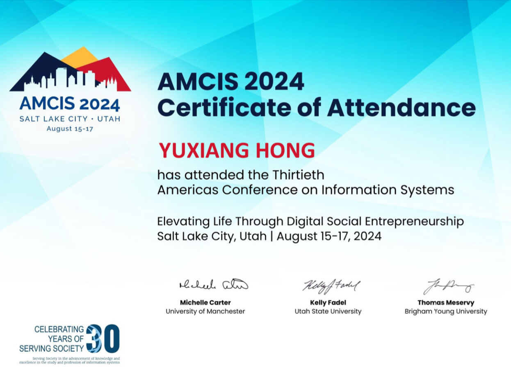
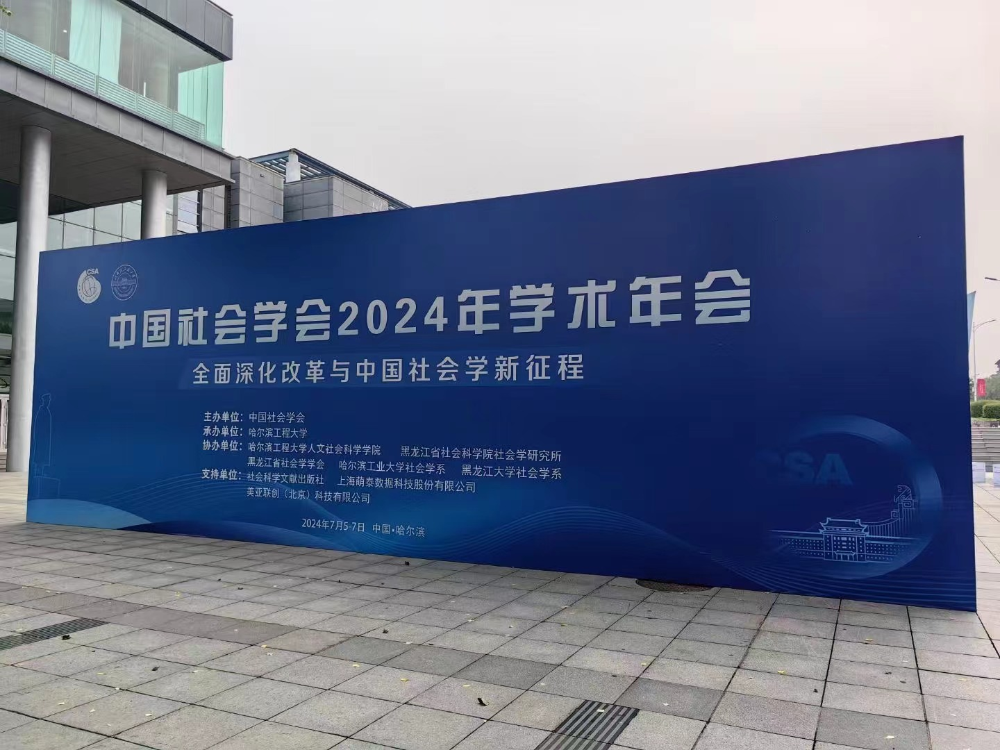
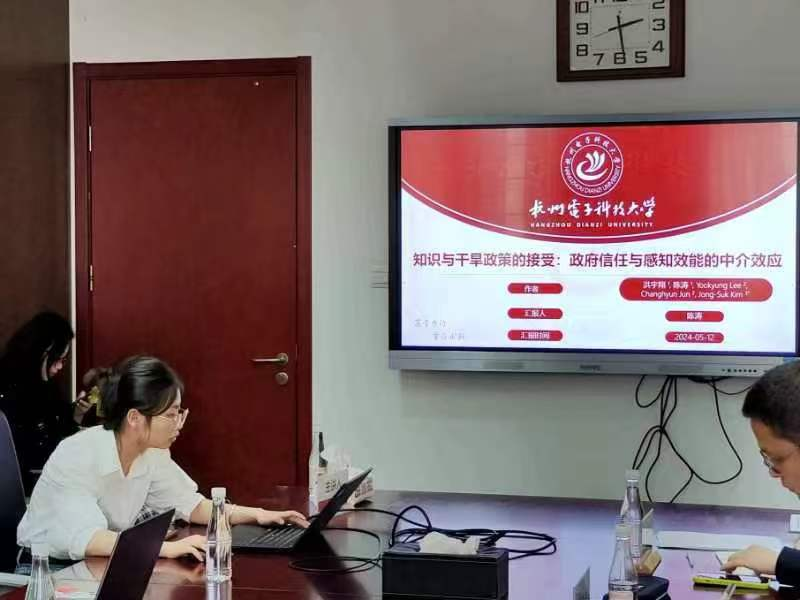
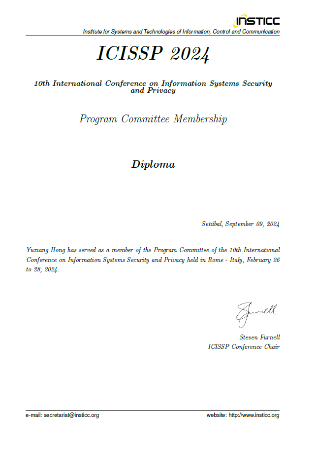

What's new
Paper “Psychological Capital and Information Security Policy Compliance” cooperated with my student Jiaqing Zhao has been accpeted by Journal of Computer Information Systems (ABDC-A).
Sep8, 2024
I attended the top conference of IS, AMCIS 2024, chaired a session on cybersecurity awareness and training, and reported my research paper. Fortunately, our paper won the top 25% paper award.
Aug18, 2024

I participated in the "Annual Meeting of Chinese Sociology" and report our research paper at the disaster sociology forum.
Jul6, 2024

I participated in "the 9th Multidisciplinary Forum on Risk and Disaster Crisis" and reported my research paper.
Jun24, 2024
Graduate students Xinyue Wang and Tao Chen attended the "China Emergency Management Discipline Development Forum 2024" held by Shanghai JiaoTong University and reported their paper.
May12, 2024

Finished this year's work as a member of the Program Committee of 10th ICISSP
Feb28, 2024

The research group went to Liangshan Prefecture to investigate the situation of drought prevention and control, Liangshan Prefecture has rich experience in this area.
Jan9, 2024

Chen qiuyu - an undergraduate student under my supervision - published a paper "Dual routes of training on information security policy compliance" in Journal of Computer Information Systems. Qiuyu was the first author and I am the correponding author. Qiuyu also participated in my other research projects. Now she has been admitted to the University of Florida for postgraduate study.
Jan5, 2024